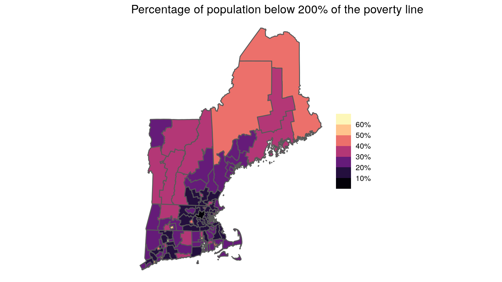

Most of the data available through tidycensus and the Census API is aggregated to certain geographic levels (tract, county, state, etc.). In other words, the data we get by executing get_acs() has been summarized by the Census Bureau so that we are able to learn how many people live in a particular county or what the median household income of a state is. There are thousands of individual variables that the Census aggregates and publishes in tabular form.
For many purposes, these pre-aggregated tables have enough information to work with. But, the Census Bureau also releases microdata from the American Community Survey. Microdata is the individual-level responses to the ACS that is used to create the summary and detail tables the Census publishes. Instead of a getting one row per state from a table, we can get one row per respondent. For the American Community Survey, this data is called the Public Use Microdata Sample (PUMS).
Using PUMS data instead of the published tables can be a very powerful tool. It can, for instance, allow you to create custom estimates that aren’t available in pre-aggregated tables. You can also use microdata to fit models on individual-level data instead of modeling block groups or census tracts.
Until recently, PUMS data was only available from the Census Bureau FTP site and was somewhat cumbersome to use. Now, PUMS data is available via web API, which means you can easily access it in R by using tidycensus.
One trade-off with using PUMS data as compared to aggregated data is that you only get the state and public use microdata area (PUMA) of each individual in the microdata. PUMAs are Census geographies that contain at least 100,000 people and are entirely within a single state. They are built from census tracts and counties and may or may not be similar to other recognized geographic boundaries. In New York City, for instance, PUMAs are closely aligned to Community Districts. So, if you are interested in pulling data about block groups, census tracts, or other small areas, you can’t use PUMS data.
The first place to start is to identify the variables you want to download. There are hundreds of PUMS variables and each describes characteristics of a person or a housing unit. pums_variables is a dataset built into tidycensus that contains names, descriptions, codes, and other metadata about the PUMS variables.
Because PUMS variables and codes can change slightly by year, you should select which year’s data you will be working with and filter pums_variables for only that year and survey. In the following example, we will be working with the 2018 1-year American Community Survey.
Later in this vignette, we use the survey and srvyr to calculate PUMS estimates, so if you want to follow along and you don’t already have them installed, you should install these two packages from CRAN.
install.packages(c("survey", "srvyr"))
library(tidyverse) library(tidycensus) pums_vars_2018 <- pums_variables %>% filter(year == 2018, survey == "acs1")
pums_variables contains both the variables as well as their possible values. So let’s just look at the unique variables.
pums_vars_2018 %>% distinct(var_code, var_label, data_type, level)
## # A tibble: 513 x 4
## var_code var_label data_type level
## <chr> <chr> <chr> <chr>
## 1 RT Record Type chr <NA>
## 2 SERIALNO Housing unit/GQ person serial number chr <NA>
## 3 DIVISION Division code based on 2010 Census definitions chr <NA>
## 4 PUMA Public use microdata area code (PUMA) based on 2010 Census definition (areas … chr <NA>
## 5 REGION Region code based on 2010 Census definitions chr <NA>
## # … with 508 more rowsIf you’re new to PUMS data, this is a good dataset to browse to get a feel for what variables are available.
Some PUMS variables relate to individuals (e.g. age, race, educational attainment) while others relate to households/housing units (e.g. number of bedrooms, electricity cost, property value).
Individuals in PUMS data are always nested within a housing unit (The ACS is sent to an housing unit address and all people living in that unit complete the survey.) Housing units are uniquely identified by the SERIALNO variable and persons are uniquely identified by the combination of SERIALNO and SPORDER. In the data dictionary included in tidycensus, variables are identified as either “housing” or “person” variables in the level column. Here, for example, are the first five person-level variables in the data dictionary.
pums_vars_2018 %>% distinct(var_code, var_label, data_type, level) %>% filter(level == "person")
## # A tibble: 279 x 4
## var_code var_label data_type level
## <chr> <chr> <chr> <chr>
## 1 SPORDER Person number num person
## 2 PWGTP Person's weight num person
## 3 AGEP Age num person
## 4 CIT Citizenship status chr person
## 5 CITWP Year of naturalization write-in num person
## # … with 274 more rowsIt is important to be mindful of whether the variables you choose to analyze are person- or household-level variables.
get_pums() to download PUMS dataTo download PUMS data from the Census API, use the get_pums() function. If you’ve used other get_*() functions in tidycensus, it should be familiar to you. The key arguments to specify are variables, state, survey, and year. Here we get PUMA, SEX, AGEP, and SCHL variables for Vermont from the 2018 1-year ACS.
vt_pums## # A tibble: 6,436 x 9
## SERIALNO SPORDER WGTP PWGTP AGEP PUMA ST SCHL SEX
## <chr> <dbl> <dbl> <dbl> <dbl> <chr> <chr> <chr> <chr>
## 1 2018GQ0001230 1 0 3 26 00300 50 20 1
## 2 2018GQ0002135 1 0 64 18 00100 50 19 2
## 3 2018GQ0002999 1 0 62 20 00400 50 19 2
## 4 2018GQ0004077 1 0 16 94 00200 50 21 2
## 5 2018GQ0006486 1 0 26 20 00400 50 19 1
## # … with 6,431 more rowsWe get 6436 rows and 9 columns. In addition to the variables we specified, get_pums() also always returns SERIALNO, SPORDER, WGTP, PWGTP, and ST. SERIALNO and SPORDER are the variables that uniquely identify observations, WGTP and PWGTP are the housing-unit and person weights, and ST is the state code.
Notice that ST, SEX and SCHL return coded character variables. You can look up what these codes represent in the pums_variables dataset provided or set recode = TRUE in get_pums() to return additional columns with the values of these variables recoded.
vt_pums_recoded <- get_pums( variables = c("PUMA", "SEX", "AGEP", "SCHL"), state = "VT", survey = "acs1", recode = TRUE )
vt_pums_recoded## # A tibble: 6,436 x 12
## SERIALNO SPORDER WGTP PWGTP AGEP PUMA ST SCHL SEX ST_label SCHL_label SEX_label
## <chr> <dbl> <dbl> <dbl> <dbl> <chr> <chr> <chr> <chr> <ord> <ord> <ord>
## 1 2018GQ000… 1 0 3 26 00300 50 20 1 Vermont/… Associate's degree Male
## 2 2018GQ000… 1 0 64 18 00100 50 19 2 Vermont/… 1 or more years of co… Female
## 3 2018GQ000… 1 0 62 20 00400 50 19 2 Vermont/… 1 or more years of co… Female
## 4 2018GQ000… 1 0 16 94 00200 50 21 2 Vermont/… Bachelor's degree Female
## 5 2018GQ000… 1 0 26 20 00400 50 19 1 Vermont/… 1 or more years of co… Male
## # … with 6,431 more rowsRemember that PUMS data is a sample of about 1% of the US population. When we want to estimate a variable that represents the entire population rather than a sample, we have to apply a weighting adjustment. A simple way to think about PUMS weights is that for each observation in the sample, the weight variable tells us the number of people in the population that the observation represents. So, if we simply add up all the person weights in our VT PUMS data, we get the (estimated) population of Vermont.
sum(vt_pums_recoded$PWGTP)
## [1] 626299Another convenient approach to weighting PUMS data is to use the wt argument in dplyr::count(). Here, we calculate the population by sex for each PUMA in Vermont (there are only four in the whole state!).
vt_pums_recoded %>% count(PUMA, SEX_label, wt = PWGTP)
## # A tibble: 8 x 3
## PUMA SEX_label n
## <chr> <ord> <dbl>
## 1 00100 Male 108732
## 2 00100 Female 111564
## 3 00200 Male 73768
## 4 00200 Female 73416
## 5 00300 Male 61601
## 6 00300 Female 64806
## 7 00400 Male 65675
## 8 00400 Female 66737Many of the variables included in the PUMS data are categorical and we might want to group some categories together and estimate the proportion of the population with these characteristics. In this example, we first create a new variable that is whether or not the person has a Bachelor’s degree or above, group by PUMA and sex, then calculate the total population, average age, total with BA or above (only for people 25 and older), and percent with BA or above.
vt_pums_recoded %>% mutate(ba_above = SCHL %in% c("21", "22", "23", "24")) %>% group_by(PUMA, SEX_label) %>% summarize( total_pop = sum(PWGTP), mean_age = weighted.mean(AGEP, PWGTP), ba_above = sum(PWGTP[ba_above == TRUE & AGEP >= 25]), ba_above_pct = ba_above / sum(PWGTP[AGEP >= 25]) )
## # A tibble: 8 x 6
## # Groups: PUMA [4]
## PUMA SEX_label total_pop mean_age ba_above ba_above_pct
## <chr> <ord> <dbl> <dbl> <dbl> <dbl>
## 1 00100 Male 108732 38.2 34113 0.469
## 2 00100 Female 111564 40.4 36873 0.473
## 3 00200 Male 73768 41.4 15831 0.303
## 4 00200 Female 73416 43.6 20248 0.367
## 5 00300 Male 61601 43.7 14869 0.326
## 6 00300 Female 64806 45.0 21527 0.434
## 7 00400 Male 65675 41.9 12788 0.278
## 8 00400 Female 66737 44.6 18980 0.391In the previous examples, you might have noticed that we calculate a point estimate, but do not get a standard error or margin of error as is included in aggregated Census tables. It is important to calculate standard errors when making custom estimates using PUMS data, because it can be easy to create a very small sub-group where there are not enough observations in the sample to make a reliable estimate.
The standard package for calculating estimates and fitting models with complex survey objects is the survey package. The srvyr package is an alternative and wraps some survey functions to allow for analyzing surveys using dplyr-style syntax. tidycensus provides a function, to_survey(), that converts data frames returned by get_pums() into either a survey or srvyr object.
In order to generate reliable standard errors, the Census Bureau provides a set of replicate weights for each observation in the PUMS dataset. These replicate weights are used to simulate multiple samples from the single PUMS sample and can be used to calculate more precise standard errors. PUMS data contains both person- and housing-unit-level replicate weights.
To download replicate weights along with PUMS data, set the rep_weights argument in get_pums() to "person", "housing", or "both". Here we get the same Vermont PUMS data as above in addition to the 80 person replicate weight columns.
vt_pums_rep_weights <- get_pums( variables = c("PUMA", "SEX", "AGEP", "SCHL"), state = "VT", survey = "acs1", recode = TRUE, rep_weights = "person" )
To easily convert this data frame to a survey or srvyr object, we can use the to_survey() function.
vt_survey_design <- to_survey(vt_pums_rep_weights)
By default, to_survey() converts a data frame to a tbl_svy object by using person replicate weights. You can change the arguments in to_survey if you are analyzing housing-unit data (type = "housing"), if you prefer to use a cluster/strata survey design without replicate weights (design = "cluster"), or if you want a survey object instead of a srvyr object. (Although, tbl_svy objects also have a svyrep.design class so you can use survey functions on srvyr objects.)
Now, with our srvyr design object defined, we can calculate the same estimates as above, but we now get column with standard errors as well.
library(srvyr, warn.conflicts = FALSE) vt_survey_design %>% survey_count(PUMA, SEX_label)
## # A tibble: 8 x 4
## PUMA SEX_label n n_se
## <chr> <ord> <dbl> <dbl>
## 1 00100 Male 108732 1123.
## 2 00100 Female 111564 1360.
## 3 00200 Male 73768 754.
## 4 00200 Female 73416 809.
## 5 00300 Male 61601 491.
## 6 00300 Female 64806 578.
## 7 00400 Male 65675 702.
## 8 00400 Female 66737 776.The srvyr syntax is very similar to standard dplyr syntax, so this should look familiar; we’ve swapped out count() for survey_count() and we don’t need a wt argument because we defined the weights when we set up the srvyr object.
The equivalent estimate using survey syntax looks like this:
## PUMA SEX_labelMale SEX_labelFemale se1 se2
## 00100 00100 108732 111564 1122.9765 1360.3476
## 00200 00200 73768 73416 754.0906 808.7364
## 00300 00300 61601 64806 490.5432 578.3529
## 00400 00400 65675 66737 702.0659 775.9812We can also repeat the estimate we did above and calculate the percentage of people that are 25 and up with a bachelor’s degree, while this time returning the upper and lower bounds of the confidence interval for these estimates. This time though, we have to subset our data frame to only those 25 and older before we summarize.
vt_survey_design %>% mutate(ba_above = SCHL %in% c("21", "22", "23", "24")) %>% filter(AGEP >= 25) %>% group_by(PUMA, SEX_label) %>% summarize( age_25_up = survey_total(vartype = "ci"), ba_above = survey_total(ba_above, vartype = "ci"), ba_pct = survey_mean(ba_above, vartype = "ci") )
## # A tibble: 8 x 11
## # Groups: PUMA [4]
## PUMA SEX_label age_25_up age_25_up_low age_25_up_upp ba_above ba_above_low ba_above_upp ba_pct
## <chr> <ord> <dbl> <dbl> <dbl> <dbl> <dbl> <dbl> <dbl>
## 1 00100 Male 72680 70216. 75144. 34113 29913. 38313. 0.469
## 2 00100 Female 77966 75671. 80261. 36873 32202. 41544. 0.473
## 3 00200 Male 52278 50826. 53730. 15831 13327. 18335. 0.303
## 4 00200 Female 55162 53643. 56681. 20248 17679. 22817. 0.367
## 5 00300 Male 45634 44743. 46525. 14869 12638. 17100. 0.326
## 6 00300 Female 49546 48576. 50516. 21527 19010. 24044. 0.434
## 7 00400 Male 45960 45067. 46853. 12788 10699. 14877. 0.278
## 8 00400 Female 48601 47783. 49419. 18980 16540. 21420. 0.391
## # … with 2 more variables: ba_pct_low <dbl>, ba_pct_upp <dbl>An important use case for PUMS data is doing regression analysis or other modeling. Let’s try to predict the length of an individual’s commute to work (JWMNP) based on their wages, employer type (private, public, self), and which PUMA they live in. We’ll use the 2018 5-year estimates so we have a bigger sample to work with.
vt_pums_to_model <- get_pums( variables = c("PUMA", "WAGP", "JWMNP", "JWTR", "COW", "ESR"), state = "VT", survey = "acs5" )
Now, we filter out observations that aren’t relevant, do a little recoding of the class of worker variable, and finally convert the data frame to a survey design object. Note that we did not request replicate weights from the API, so we specify design = "cluster" when we create the survey design. This creates the survey using a cluster design with the household (SERIALNO) as the primary sampling unit, the PUMA as the strata, and PWGTP as the weight.
vt_model_sd <- vt_pums_to_model %>% filter( ESR == 1, # civilian employed JWTR != 11, # does not work at home WAGP > 0, # earned wages last year JWMNP > 0 # commute more than zero min ) %>% mutate( emp_type = case_when( COW %in% c("1", "2") ~ "private", COW %in% c("3", "4", "5") ~ "public", TRUE ~ "self" ) ) %>% to_survey(design = "cluster")
Let’s quickly check out some summary stats using srvyr.
vt_model_sd %>% summarize( n = survey_total(1), mean_wage = survey_mean(WAGP), median_wage = survey_median(WAGP), mean_commute = survey_mean(JWMNP), median_commute = survey_median(JWMNP) )
## # A tibble: 1 x 10
## n n_se mean_wage mean_wage_se median_wage median_wage_se mean_commute mean_commute_se
## <dbl> <dbl> <dbl> <dbl> <dbl> <dbl> <dbl> <dbl>
## 1 282733 3395. 44601. 527. 35000 255. 23.3 0.256
## # … with 2 more variables: median_commute <dbl>, median_commute_se <dbl>vt_model_sd %>% survey_count(emp_type)
## # A tibble: 3 x 3
## emp_type n n_se
## <chr> <dbl> <dbl>
## 1 private 224760 3128.
## 2 public 42966 1356.
## 3 self 15007 763.And now we’re ready to fit a simple linear regression model.
model <- survey::svyglm(log(JWMNP) ~ log(WAGP) + emp_type + PUMA, design = vt_model_sd) summary(model)
##
## Call:
## svyglm(formula = log(JWMNP) ~ log(WAGP) + emp_type + PUMA, design = vt_model_sd)
##
## Survey design:
## Called via srvyr
##
## Coefficients:
## Estimate Std. Error t value Pr(>|t|)
## (Intercept) 1.699601 0.093094 18.257 < 2e-16 ***
## log(WAGP) 0.113913 0.008817 12.920 < 2e-16 ***
## emp_typepublic -0.052845 0.025339 -2.086 0.0371 *
## emp_typeself -0.306227 0.045270 -6.764 1.42e-11 ***
## PUMA00200 0.007800 0.028076 0.278 0.7812
## PUMA00300 0.023629 0.028526 0.828 0.4075
## PUMA00400 -0.117300 0.027733 -4.230 2.36e-05 ***
## ---
## Signif. codes: 0 '***' 0.001 '**' 0.01 '*' 0.05 '.' 0.1 ' ' 1
##
## (Dispersion parameter for gaussian family taken to be 0.6817393)
##
## Number of Fisher Scoring iterations: 2If you’ve used the spatial functionality in tidycensus before, you might also want to put your custom PUMS estimates on a map. To do this, let’s use tigris to download PUMA boundaries for the states in New England as an sf object.
ne_states <- c("VT", "NH", "ME", "MA", "CT", "RI") ne_pumas <- map(ne_states, tigris::pumas, class = "sf", cb = TRUE) %>% reduce(rbind)
Next we download the income-to-poverty ratio from the PUMS dataset and calculate the percentage of population below 200% of the poverty line for each PUMA.
ne_pums <- get_pums( variables = c("PUMA", "POVPIP"), state = ne_states, survey = "acs1" ) ne_pov <- ne_pums %>% group_by(ST, PUMA) %>% summarize( total_pop = sum(PWGTP), pct_in_pov = sum(PWGTP[POVPIP < 200]) / total_pop )
And now we can make a choropleth map by joining the PUMA boundaries with the PUMS data.
ne_pumas %>% left_join(ne_pov, by = c("STATEFP10" = "ST", "PUMACE10" = "PUMA")) %>% ggplot(aes(fill = pct_in_pov)) + geom_sf() + scale_fill_viridis_b( name = NULL, option = "magma", labels = scales::label_percent(1) ) + labs(title = "Percentage of population below 200% of the poverty line") + theme_void()

The Census provides calculated estimates and standard errors for a number of states and variables to ensure that users’ analysis of PUMS data matches the expected values.
In the following example, we generate a few estimates using the methodology described above. You may want to perform a similar verification on your system to ensure your PUMS estimates will be accurate.
Here are a few estimates we’ll verify from the 2018 ACS 1-year PUMS estimates for user verification file:
| State | Variable | Estimate | SE |
|---|---|---|---|
| Wyoming | GQ institutional population (RELP=16) | 7018 | 3 |
| Utah | Owned free and clear (TEN=2) | 209632 | 3972 |
| Hawaii | Age 0-4 | 86452 | 944 |
wy_relp <- get_pums( variables = "RELP", state = "Wyoming", survey = "acs1", rep_weights = "person" ) ut_ten <- get_pums( variables = "TEN", state = "Utah", survey = "acs1", rep_weights = "housing" ) hi_age <- get_pums( variables = "AGEP", state = "Hawaii", survey = "acs1", rep_weights = "person" )
wy_relp %>% to_survey() %>% survey_count(RELP) %>% filter(RELP == "16")
## # A tibble: 1 x 3
## RELP n n_se
## <chr> <dbl> <dbl>
## 1 16 7018 2.64ut_ten %>% distinct(SERIALNO, .keep_all = TRUE) %>% to_survey(type = "housing") %>% survey_count(TEN) %>% filter(TEN == 2)
## # A tibble: 1 x 3
## TEN n n_se
## <chr> <dbl> <dbl>
## 1 2 209632 3972.hi_age %>% filter(between(AGEP, 0, 4)) %>% to_survey() %>% summarize(age_0_4 = survey_total(1))
## # A tibble: 1 x 2
## age_0_4 age_0_4_se
## <dbl> <dbl>
## 1 86452 944.3 for 3 – yay!